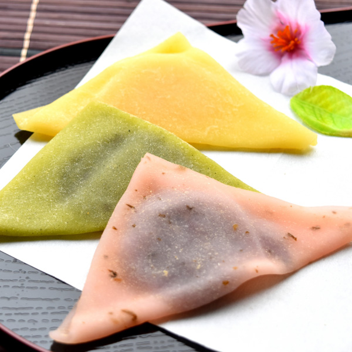
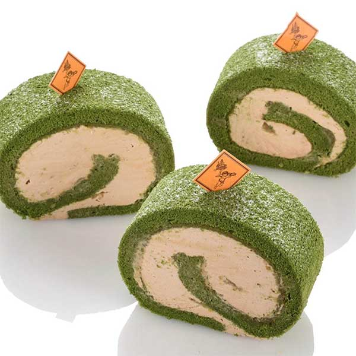
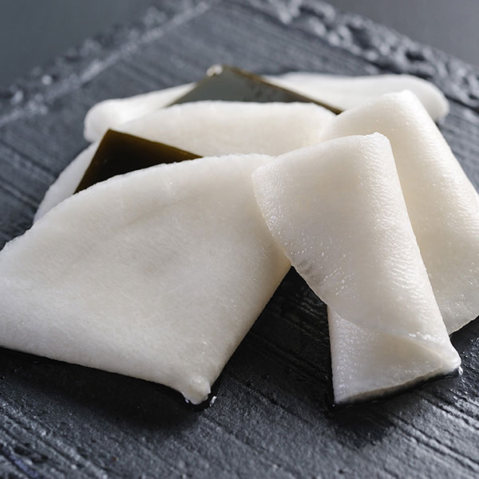
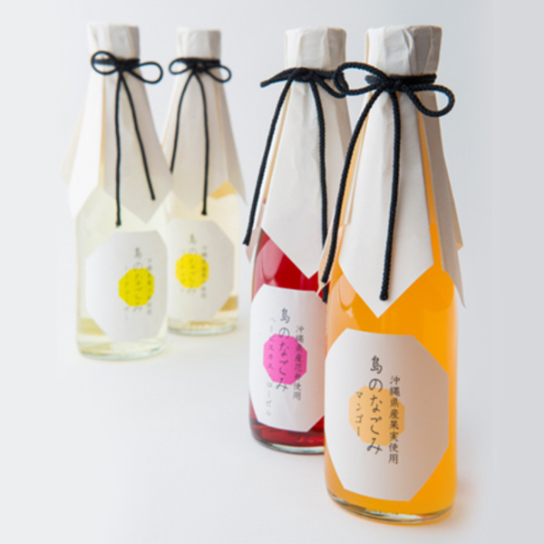
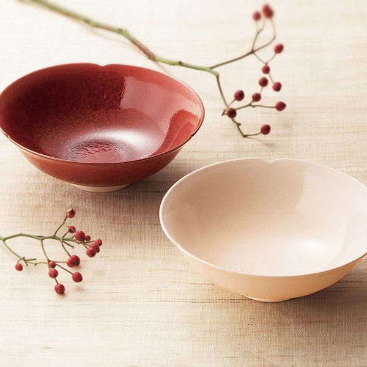
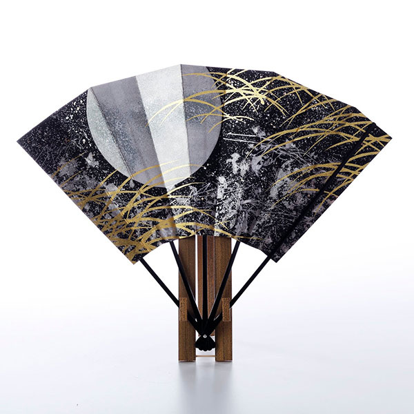
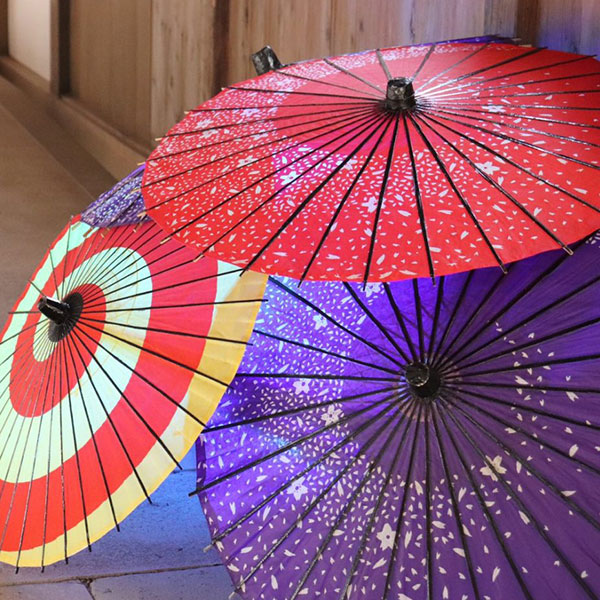

商品紹介
京都の美味しいもの、きれいなもの揃えています。
- 
京都のお菓子
おなじみ生八つ橋をはじめ、伝統の京銘菓を常時３０種類以上お取り扱いしています。
- 
お抹茶いろいろ
茶道に使うお薄、お濃茶はもちろん、お抹茶を使ったケーキやチョコレートなどのお菓子もおすすめです。
- 
京都のお漬物
たとえば京都で冬のお漬物と言えば、千枚漬けとすぐき。季節に合わせたお漬物をご用意しています。
- 
伏見のお酒
京の酒処・伏見。「御香水」という軟水を使ったお酒の味わいはやわらかく、「女酒」と呼ばれています。
- 
清水焼
やきものコーナーには意趣をこらした清水焼を、季節に合わせて展示しています。ミニ陶器市も開催予定です。
お香
伝統の香りから、お花や果実をイメージしたモダンな香りまで、おうち時間のお楽しみにお勧めです。
- 
飾り扇
京都の四季や伝統の文様を、華麗に繊細に描いた飾り扇は、外国の方へのお土産に人気です。
- 
和傘
今では目にすることもめずらしい和傘。一本一本手作りで仕上げられています。